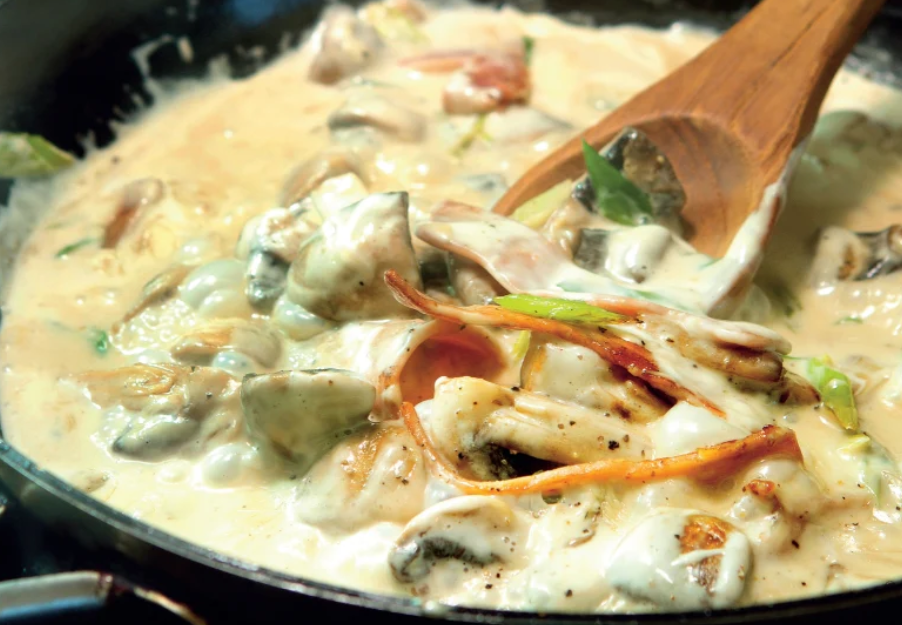

Creamy Pasta Sauce

So rich!
Ingredients
- 4 shallots finely chopped
- 4 bacon slices rind removed and chopped
- 200g button mushrooms sliced
- 250ml cream for cooking softened
Steps
- Combine shallots and bacon in large frying pan over a moderate heat and cook, stirring until the bacon is crisp.
- Add mushrooms and stir until softened.
- Add Cream for cooking and simmer for 5 to 7 minutes allowing the flavours to meld.
- Season to taste.
Homepage